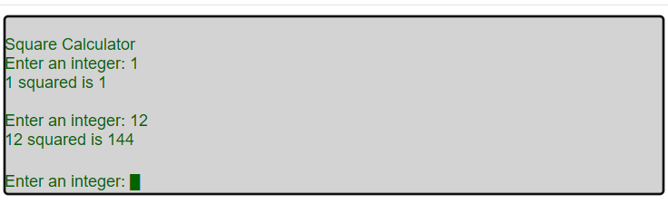

stdio-div
This simple C program demos inputting and printing characters to a div tag.

#include <stdio.h>
#include <stdlib.h>
#include "twr-crt.h"
void stdio_div() {
char inbuf[64];
int i;
printf("Square Calculator\n");
while (1) {
printf("Enter an integer: ");
twr_mbgets(inbuf);
i=atoi(inbuf);
printf("%d squared is %d\n\n",i,i*i);
}
}
With an index.html like the following. This time we are using twrWasmModuleAsync which integrates blocking C code into JavaScript. twrWasmModuleAsync can also be used to receive key input from a <div> or <canvas> tag.
<head>
<title>stdio-div example</title>
</head>
<body>
<div id="twr_iodiv" style="background-color:LightGray;color:DarkGreen" tabindex="0">Loading... <br></div>
<script type="module">
import {twrWasmModuleAsync} from "twr-wasm";
let amod;
try {
amod = new twrWasmModuleAsync();
document.getElementById("twr_iodiv").innerHTML ="<br>";
document.getElementById("twr_iodiv").addEventListener("keydown",(ev)=>{amod.keyDownDiv(ev)});
await amod.loadWasm("./stdio-div.wasm");
await amod.callC(["stdio_div"]);
}
catch(ex) {
amod.divLog("unexpected exception");
throw ex;
}
</script>
</body>